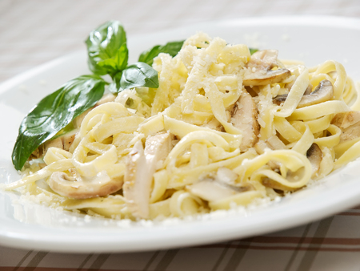

chicken alfredo

Description
Oh, chicken alfredo: It's the classic pasta we just can't seem to get enough of. Of course there are tons of jarred pasta sauces you can buy, but making alfredo sauce from scratch is actually so easy.
This is a great base recipe for all your one-pot pasta needs. Consider the following revisions when you feel like mixing it up.
Ingredients
- 2 tbsp.extra-virgin olive oil
- 8 oz.fetuccini
- freshly grated Parmesan
Steps
- In a large skillet over medium-high heat, heat oil. Add chicken and season with salt and pepper. Cook until golden and cooked through, 8 minutes per side. Let rest 10 minutes, then slice.
- Add milk, broth, and garlic to skillet. Season with salt and pepper and bring to a simmer. Add fettuccine, stirring frequently for about 3 minutes. Let cook until al dente, 8 minutes more.
- Stir in heavy cream and Parmesan until combined. Simmer until sauce thickens.
- Remove from heat and stir in sliced chicken. Garnish with parsley.